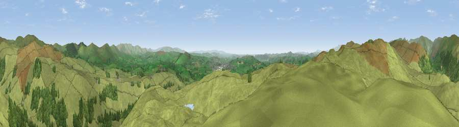

Ulgraves
#5642 in England · top 25% of its area beats it · near Garnett BridgeWhere it is
The exact computed spot (SD 51065 99610). Click the marker for map links.
The view, rendered

A 360° render of this exact spot computed from the terrain model, tree cover and land cover — summer colours, afternoon light, calibrated against photographs of famous viewpoints. Real trees, hedges and buildings will differ in detail.
The panorama
Grey silhouette: terrain skyline in each direction (720 bearings, Earth curvature and refraction included). Dashed green: skyline with trees (+15 m) and buildings (+8 m) as obstacles. Blue strip: how far the ground is visible on each bearing.
Where the view opens
Wedge length = distance to the farthest visible ground on that bearing (vegetation-aware). Rings at 10, 25 and 50 km.
What fills the view
89% grassland · 10% woodland
Angular shares of the visible panorama (visual magnitude), not map area. Landscape diversity 0.16 (0–1 Shannon).
Key numbers
More beautiful places nearby
The staircase of upgrades: each row has a higher view potential than everything closer. Driving times are estimates from straight-line distance, calibrated against real road routing — check an actual route before setting out.
| Place | Direction | Drive | Score |
|---|---|---|---|
| Potter Fell SW | W · 2 km | ~5 min | 73.8 |
| Viewpoint near Staveley | WNW · 3 km | ~7 min | 75.1 |
| Viewpoint near Sadgill | N · 4 km | ~9 min | 77.3 |
| Viewpoint near Garnett Bridge | NNE · 4 km | ~10 min | 77.6 |
| Sallows | WNW · 9 km | ~17 min | 78.0 |
| Sour Howes | WNW · 9 km | ~18 min | 78.4 |
| Kentmere Pike | NNW · 9 km | ~18 min | 78.7 |
| Viewpoint near Kentmere | NW · 10 km | ~19 min | 79.5 |
54.38961, -2.75507 · source: dobih hill · position refined by local search. Computed location — check access rights before visiting.